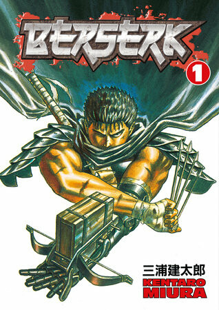
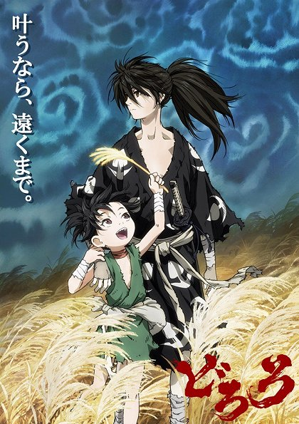

Moje PEAK Anime Recenze
"Pokud jsi tohle neviděl, jako bys ani nežil. DJ Bobo approved."
JOJO'S BIZARRE ADVENTURE
JOJO není jen anime, je to životní styl. Sledujeme šílenou cestu rodu Joestarů napříč generacemi. Od dýchacích technik až po neuvěřitelné "Standy". Každá část má jiný vibe, jiný vizuál a pokaždé je to naprostý masterpiece. Pokud nemáš oblíbenou pózu z Jojo, tak se mnou ani nemluv.
BERSERK (1997)
Tohle je pro opravdové fajnšmekry. BERSERK je temný, brutální a emocionálně tě zničí. Příběh Gutse, osamělého žoldáka, a jeho rivality/přátelství s Griffithsem je to nejlepší, co bylo v žánru dark fantasy kdy napsáno. Zapomeň na moderní CGI remaky, originál z roku '97 má tu správnou depresi a atmosféru.

DORORO
Příběh o Hyakkimarovi (kterého já familiárně nazývám Bartoloměj), který byl při narození obrán o 48 částí těla démony. Teď si je bere zpět! Společně s malou Dororo putují feudálním Japonskem a sekají všechno, co jim stojí v cestě. Je to smutné, je to akční a animace od studia MAPPA je prostě... ano, uhodli jste, PEAK.
